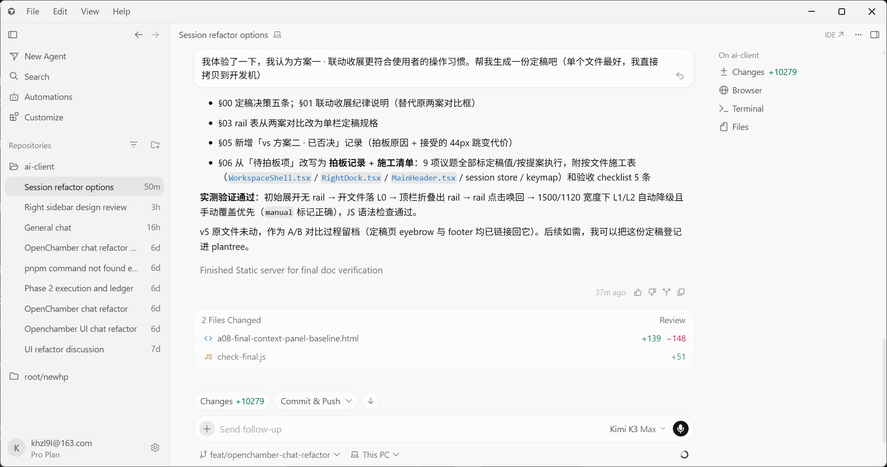
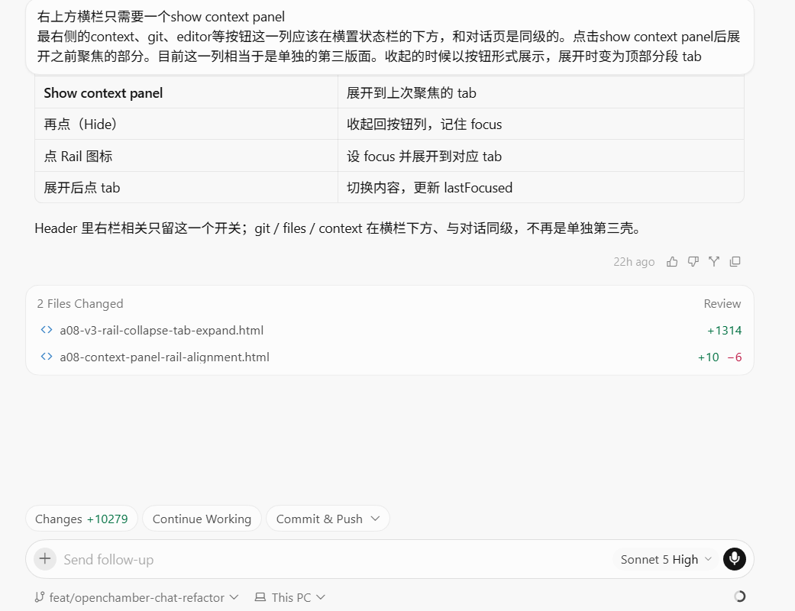
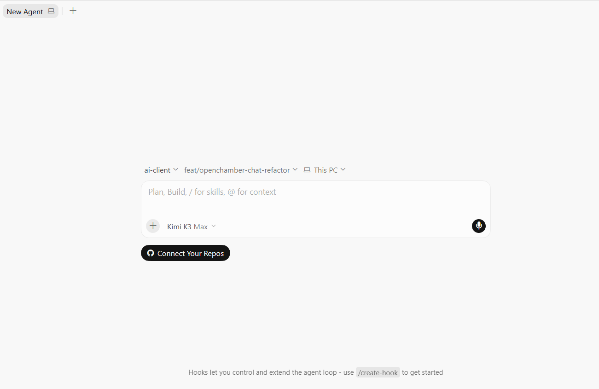
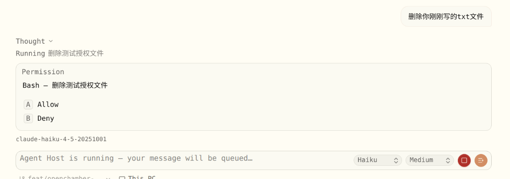

2026-08-02
页面身份：D25 分域字体规格（docs/plans/2026-07-30-d25-font-domain-design.md §6 验收口径）要求的视觉凭证页——三测点「现状 mono / D25 split / Cursor 参照」并排对拍，同时承载工程规范第 10 条要求的对比报告。
与 A07 v4 追记的关系：a07-cursor-composer-alignment.html 的原型渲染层已按「渲染字节冻结、注记可追加」原则定格在 D18③ 全等宽字体上（v3 是用户定稿版本号，不回改）——那份文件继续是 Flexoki 调色板 / 卡片形态 / 间距 / 三级灰等非字体裁定的验收凭证，但其字族画面自 D25 起不再是施工依据，其文末「v4 追记」已注明新增视觉凭证转移到本页。composer 卡片形态的前后对照（见 §3）一并并入本页，因为 T-30 批2 形态规格（2026-07-31-t30b2-composer-form-design.md）的施工序把 a09 截图列为最后一步 S7，字体 token 与卡片形态是同批交付、互相影响可视宽度的两个维度。
DPR / 参照来源：三测点的 Cursor 参照图沿用 D25 规格 §0 的标定方法——以 Windows 11 窗口控制按钮恒为 46×32px 反推，图中三键中心间距实测 ≈68 图像 px ⇒ DPR = 1.5（Win 150% 缩放）。本页下方的裁选区是同一张已标定截图（refs/feedback-20260730/cursor-参照-协调布局.png，原始 2030×1071px）上的目视框选，未做二次像素级复核，只服务并排对拍，不构成新的独立实测。§3 composer 形态对照区引用的是另一批参照（2026-07-31 第三轮点验），未做 DPR 标定，仅作卡片形态 / 圆角 / 色度层面的定性对照，不用于量化。
Cursor §0 实测标定：45rem 阅读栏 = 48 CJK 字/行。D25 把本仓阅读栏从 48rem 收到 --container-reading（45rem，
-6.25%），同时把 UI 正文从全等宽切到分域比例栈。下面两栏使用同一段真实感文案，字号 token 保持不变
（--text-markdown 15 / --text-code 13），只切换 font-family，把这一个变量的效果单独看清楚。
这版重构把 ToolRows.tsx 的工具行拆成两条通道：动词维持 15px 比例字，参数按 argKind 落到 13px 等宽；
阅读栏从 48rem 收到 --container-reading（45rem），对齐 Cursor 参照约 48 CJK 字/行的节奏。
改动集中在 src/renderer/styles/globals.css 与 3 个组件文件，净增 128 行，新增 6 处单测覆盖
argKind 的三分支判定。
中英混排行：参照图里 WorkspaceShell.tsx 与 RightDock.tsx 这类标识符只在正文里保持等宽，
出现在下拉触发器或文件卡上时反而是比例字体——同一个字符串，「读 / 比对 / 复制」时是 mono，当「名字」点一下时是 sans。
这版重构把 ToolRows.tsx 的工具行拆成两条通道：动词维持 15px 比例字，参数按 argKind 落到 13px 等宽；
阅读栏从 48rem 收到 --container-reading（45rem），对齐 Cursor 参照约 48 CJK 字/行的节奏。
改动集中在 src/renderer/styles/globals.css 与 3 个组件文件，净增 128 行，新增 6 处单测覆盖
argKind 的三分支判定。
中英混排行：参照图里 WorkspaceShell.tsx 与 RightDock.tsx 这类标识符只在正文里保持等宽，
出现在下拉触发器或文件卡上时反而是比例字体——同一个字符串，「读 / 比对 / 复制」时是 mono，当「名字」点一下时是 sans。

裁选自 cursor-参照-协调布局.png（近似框选，非像素级标定）：user 气泡 + assistant 前两条要点，
可见 WorkspaceShell.tsx 等标识符在正文中维持等宽 chip。
D25 §2.3 三处「口径细化点」采方案 A（编排者临时裁定，第二轮 GUI 点验未异议，裁定生效）：侧栏分支 chip 回落到
sans 13px，而不是字面口径的 mono——同一判据，「内容 vs 控件」。下面 4 行 mock 数据同时展示中文标题 truncate、
分支 chip 与相对时间 tabular-nums 同行的效果。
字号 token 与 B 栏一致（本页只对比字族）；相对时间在 D25 之前实际是原始 text-[11px]
（D25 §3.1 迁 --text-meta 13px），那处尺寸变更与本页的字族对比正交，未在此重演。
分支 chip 为 sans 13px（D25 §2.3 方案 A）：同一标题串比例字体下可见字符预算 +20% 左右，量化实测见 §4 「侧栏标题可见字符数」。
裁选自同一张参照图的左栏 Repositories 区（近似框选）：Session refactor options 50m /
OpenChamber chat refactor … 6d 等行，标题与相对时间同行、分支未在此列表内单独出现为 chip。
D25 §2.4：动词（verb）走 sans 15px，参数（arg）按 argKind 分叉——'ident'
（路径 / URL / 命令）落 mono 13px，'prose'（「N files」「for Ns」等数字+散文摘要）保持 sans 15px 并加
tabular-nums。旧栈下三者「全等宽同号」，没有这层区分。
verb 与 arg 同族同号（mono 15px），argKind 的 ident/prose 区分在字体层面不可见。
verb sans 15px / argKind==='ident' 的 arg mono 13px / argKind==='prose' 的 arg sans 15px
+ tabular-nums（生产实现见 toolCard.ts:toolRowArgClass）。
裁选自同一张参照图（近似框选）：WorkspaceShell.tsx 等行内标识符维持 mono chip，
Finished Static server for final doc verification 摘要行整行为比例字体。
T-30 批2 形态规格（docs/plans/2026-07-31-t30b2-composer-form-design.md）把 composer 卡片形态与 D25 字体域
映射列为同批：字体 token 的宽度节奏直接影响卡片可视宽度与截断点，施工序把这份截图核对放在最后一步（S7），因此并入本页而不
单独出一份文件。

Sonnet 5 High ⌄ 与麦克风连成一个胶囊分组。

待 GUI 点验截图回填（第五轮）
形态规格已裁定（见下表关键数值），但代码是否已落地、落地后的真实渲染，需等第五轮 GUI 点验产出——此处不放假图，避免把裁定值误当成已验收的视觉。
| 卡高 | 42px | 形态 | pill | 边框 | border → input，零色度 |
| 圆钮 | 24px 近黑 | 模型档位 | 合并 Sonnet High ⌄ |
依据 | t30b2-composer-form-design.md |
「已锁」= 已有可回归的静态断言（fontDomainScan.test.ts 等），CI 每次跑都会拦住回归；
「待 GUI 点验」= 依赖真机渲染（字重回退、抖动、基线）的口径，尚未有实测值，本表不编造数值，如实标「待测」。
| 指标 | 现状 | 目标 | 测法 | 状态 |
|---|---|---|---|---|
| 侧栏标题可见字符数 | 13（等宽 14px，advance 8.4px，实得 ≈112px） | ≥16（比例 advance ≈7.0px，+20%） | 固定标题串 Session refactor options，量到截断位 |
待 GUI 点验（Linux/Win10 用户线） |
| 阅读栏 CJK 字/行 | 51.2 @48rem | 48 ± 2（= Cursor 实测） | 中文段落取样计数 | 待 GUI 点验（Linux/Win10 用户线） |
| 字重可辨 | semibold/bold 0 处，medium 12 处部分失效 | 400 与 600 并置，200% 放大目视可辨；Win10 必测 | 同屏并置截图 | 待 GUI 点验（Win10 用户线，字重矩阵最弱环） |
| 数字不抖 | 未测 | 计时器跑 10s，逐帧 x 位置位移 = 0 | 录屏抽帧 | 待 GUI 点验（Linux/Win10 用户线） |
| mono/sans 光学配平 | N/A | 行内 13px mono 的视觉高度 ≤ 15px sans 正文 | 并置截图 | 断言已锁（fontDomainScan.test.ts A1） |
| CJK/Latin 基线 | 未测（open-q #10 的原始风险） | 同行 CJK 与拉丁基线重合 | 截图画辅助线 | 待 GUI 点验（Linux/Win10 用户线） |
| 字号档位数 | 7 档（10/11/12/13/14/15/16） | ≤5 档（10 仅 mono 拉丁 / 13/14/15/18） | rg 统计 | 断言已锁（fontDomainScan.test.ts A6） |
| tracking 使用点 | 7 处（其中 1 处即将删） | 6~8 处且全部落在 §3.3 四档内 | rg 统计 | 断言已锁（fontDomainScan.test.ts A5） |
「mono/sans 光学配平」标「断言已锁」的范围说明：fontDomainScan.test.ts A1 锁的是 font-mono
白名单闭包（只允许出现在指定文件），配合 ui/ident.tsx 把 mono 用法硬编码到 --text-code(13)，
结构上锁死了 13px mono 配 15px sans 这一对光学补偿值不会被随手改动——但「视觉高度」本身仍是渲染结果，最终判定仍需目视，
这里锁住的是「配对关系」而不是「像素测量结果」。
html[data-font-domain="mono"]（src/renderer/styles/globals.css @layer base）
直接给 <html> 声明 font-family: var(--font-mono)，一键还原 D25 之前的全等宽观感，
默认态（不设该属性）即分域（split）。这是唯一被保留一个版本周期、之后即删除的过渡开关。
本页的「A · 现状」/「B · D25」两栏是静态并排渲染（各自用 .legacy 局部覆写或默认样式实现），
不是同一个 data-font-domain 开关的两态截图——两者结论一致（旧栈 vs 分域栈），但取值方式不同，
不要把本页的 A/B 与生产开关的 A/B 混为一处证据。